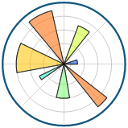

|
Strings |
Recent Posts all posts
Docker |

|
Defaults of Configuration Files |

|
Git Bundle |
How to use GLPK |
|  |
Matplotlib Markers |
How to use arXiv data |

|
Word Vectors |

|
URL RegEx |

|
Pythons map, reduce and filter as list comprehensions |